As an image-sharing service, Imgur wants to focus on making uploading and sharing images simpler for customers, so that they can increase overall share of, and integration in, the social image-sharing business.
The current image upload process lacks clear direction and customers can become lost in the process. A product which succeeds will walk the customer through how to effectively upload and share images on Imgur and other social networks.
The project should focus on customers who will be uploading images to share with others at work on on social sharing sites. This audience was selected as they would likely be on computers which means they would use the web interface.
I was working alone on this project for both research and interaction design.
I only had three days budgeted for this project and wanted to do both research and interaction design. My project plan was created in about three hours with my research taking a day, and the findings analysis and interaction design taking the remainder of the time.
For this project I chose to do a task flow audit, goals analysis, and interaction redesign.
Before redesigning the Imgur web upload process I did a thorough exploration of the goals an Imgur customer might have.
I performed an informal poll of five friends and colleagues who have shared images online in the last month and sorted the results into a chart showing frequency vs ratio of users to help me understand how to prioritize features.
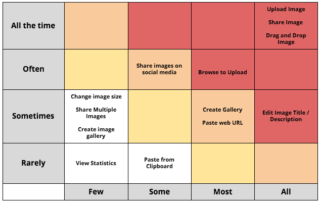
After focusing on user goals I chose what to focus on when improving the interface, settling on two principles:
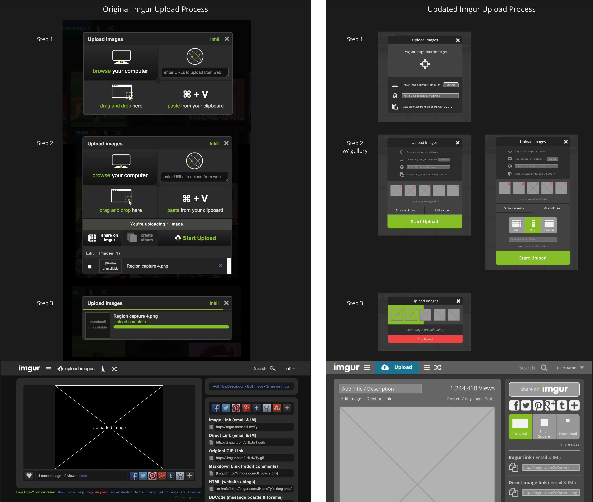
When new customers tap the upload button on the home, they are presented with a screen with four equally weighted options (Fig. 1.1).
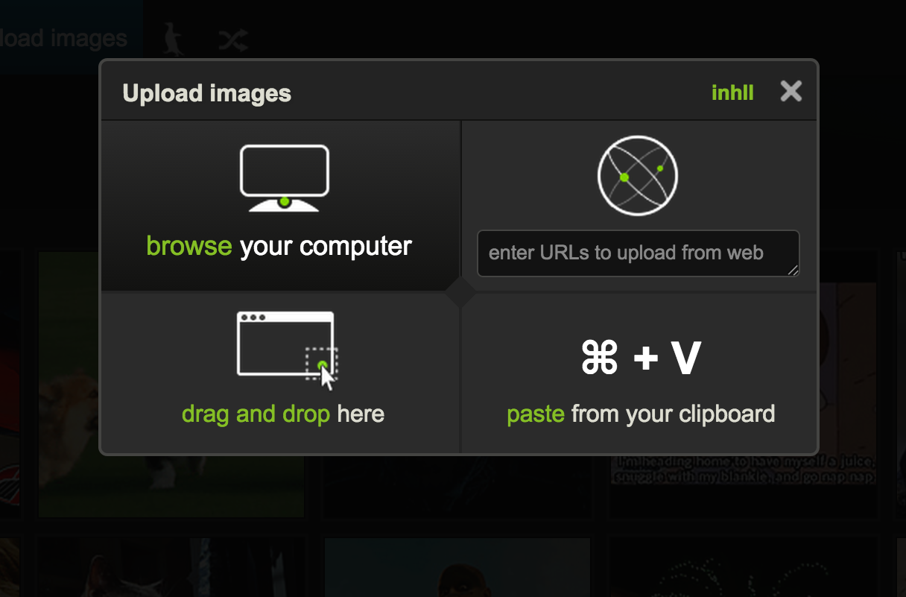
Figure 1.1 - Original State
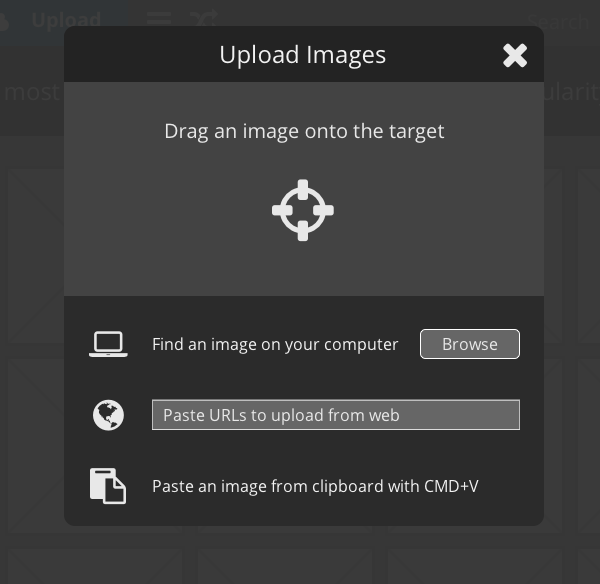
Figure 1.2 - Updated State
The trouble weighting options equally it’s not obvious which route is best. Imgur has an opportunity to teach new customers the best way to upload images.
I propose a new look (Fig. 1.2) which keeps the process and options intact, but focuses new customers on Drag and Drop. It is also much easier to scan the new interface to understand the available options
Once the customer has selected files to be uploaded, the Imgur interface still does not show clear hierarchy (Fig. 2.1). Users find competing information, which is not clearly separated by task or order of operations: some content is green which draws the eye, visual treatment of button areas and content areas are similar, and even reading through content is difficult as it’s not linear.
By de-emphasizing already-used controls (Fig. 2.2), hiding a few ambiguous controls (edit image & filename), and emphasizing next steps clarifies what to do next for new customer.
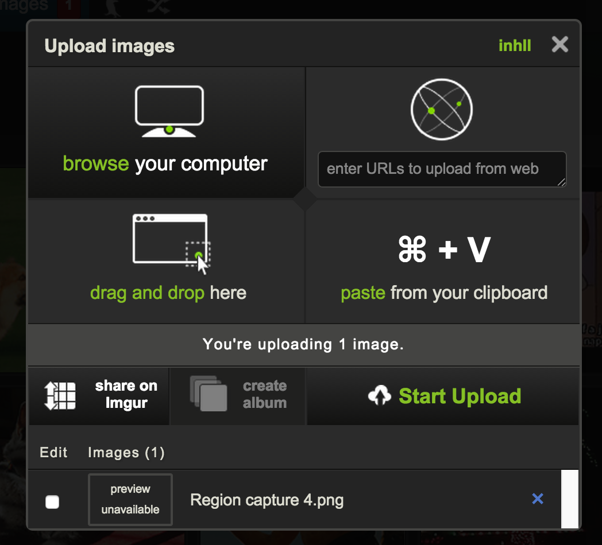
Figure 2.1 - Original State
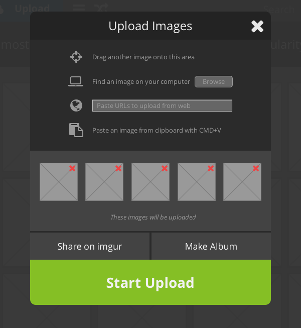
Figure 2.2 - Updated State
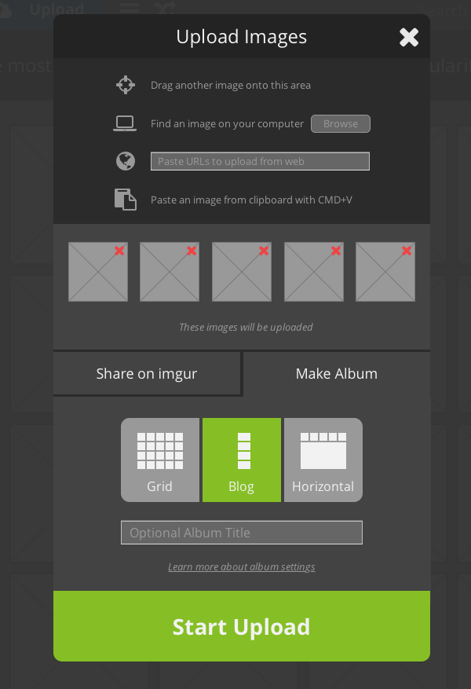
Figure 2.3 - Original State w/ Gallery
I’ve ordered the page to be roughly chronological:
Again, the focus here is on accomplishing customer goals. Everything points the customer toward the goal (Start Upload) and everything is chunky and tappable for mobile devices.
A screen shows each file individually and repeats the “green bar fills to the right” process for each file. This works just fine, but does not show the customer how many total files have uploaded or remain to upload.
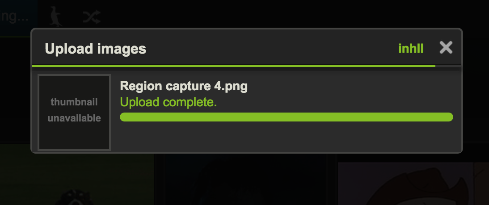
Figure 3.1 - Original State
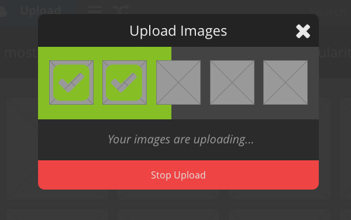
Figure 3.2 - Updated State
In the proposed screen I’ve kept all the previous functionality, and ensured the customer knows which files have uploaded, which failed, and about how much longer it will be until the rest of the files have uploaded. There is also a message area that can display different system messages, followed by a clearly-labelled escape hatch.
Now the upload process is coming to a close. Statistics, edit, description, views, posting time, etc are sprinkled about the page. Icons for social sharing are both below the picture and on the right side of the page. Share in Imgur is not an obvious choice.
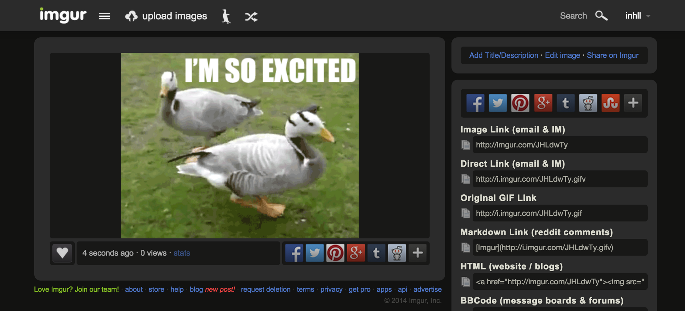
Figure 4.1 - Original State
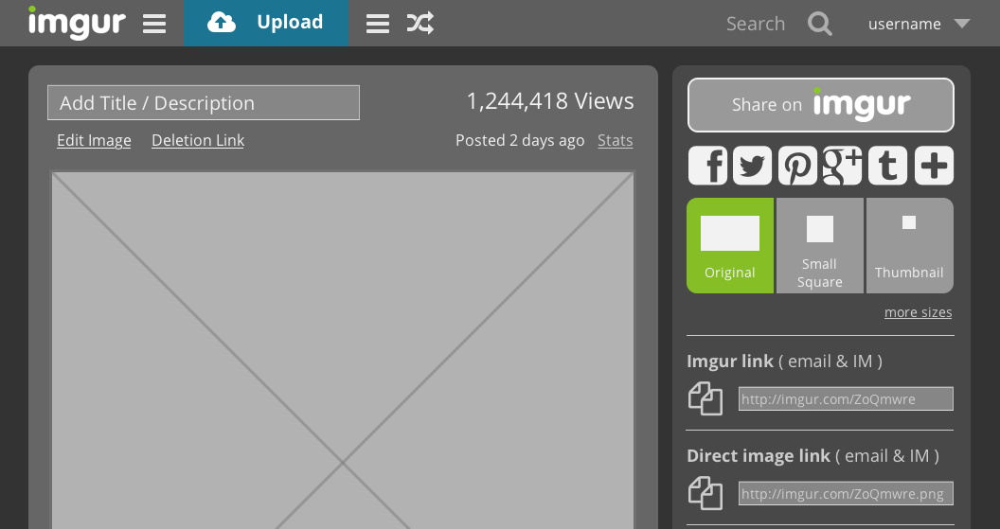
Figure 4.2 - Updated State
In the proposed page, the overall layout has been kept intact with all key functionality. I’ve chosen to put the title / description above the image, clustered with editing and deletion controls. Information about photo views, posting time, and stats are in the upper right to balance the container.
Sharing is now only shown in the right panel with Imgur’s sharing prioritized, simple social sharing highlighted, and image-size controls surfaced. The existing links are also displayed below the simple share options to ensure customers who need specific links are still served.
I feel this project was a success, and resulted in a much better upload interaction for novice Imgur customers. Upon sharing the interface with two of my original task analysis participants they understood what to do immediately.
If I could budget more time for this project I would like to do a full comparative usability test phase to determine the effectiveness of the updated interface.